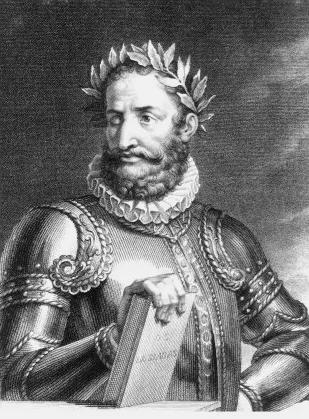

Luís Vaz de Camões

Luís Vaz de Camões nasceu no ano de 1524 ou 1525, na cidade portuguesa de Lisboa. No entanto, pouco se sabe sobre a vida do escritor. Ele era sobrinho do frade D. Bento de Camões, chanceler da Universidade de Coimbra, onde, possivelmente, o poeta estudou Filosofia e Literatura. Lutou como soldado em Ceuta, onde perdeu o olho direito. Morou em Goa, na Índia, a partir de 1553, onde teria iniciado a escrita de seu livro Os Lusíadas.Também foi provedor-mor de defuntos e ausentes em Macau. Publicou Os Lusíadas em 1572, com relativo sucesso. Porém, morreu pobre em 10 de junho de 1580, em Lisboa.